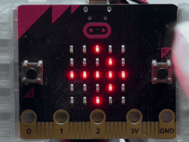
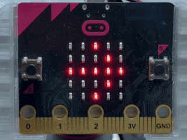
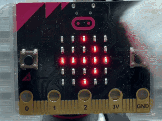
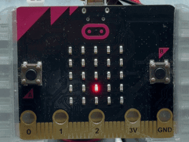
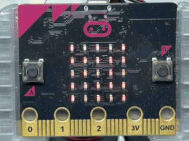
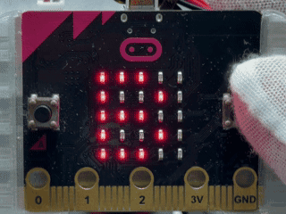
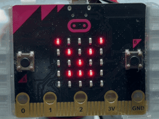
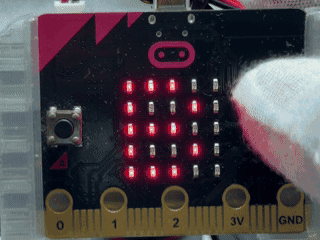

地図記号3たくクイズ 地図記号3択クイズ
このプログラムでは、micro:bitを使って、交番、保健所、小中学校の地図記号を見分ける3たくクイズを楽しむことができます。 このプログラムでは、micro:bitを使って、交番、保健所、小中学校の地図記号を見分ける3択クイズを楽しむことができます。
使い方
- さいしょにBと右向きやじるしをこうごにひょうじ 最初にBと右向き矢印を交互に表示
- Bボタンでクイズの開始 Bボタンでクイズの開始
- 画面に交番、保健所、小中学校のどれか1つの地図記号をひょうじ 画面に交番、保健所、小中学校のどれか1つの地図記号を表示
- 交番の地図記号だと思ったらAボタンをおす 交番の地図記号だと思ったらAボタンを押す
- 保健所の地図記号だと思ったらBボタンをおす 保健所の地図記号だと思ったらBボタンを押す
- 小中学校の地図記号だと思ったらA+Bボタンを同時におす 小中学校の地図記号だと思ったらA+Bボタンを同時に押す
- せいかいすると○をひょうじ、とくてんがついかされる 正解すると○を表示、得点が追加される
- まちがえると×をひょうじ、ライフがげんしょうする 間違えると×を表示、ライフが減少する
- 5問答えるかライフがなくなるとゲームしゅうりょう 5問答えるかライフがなくなるとゲーム終了
- さいごにせいかい数とけっかのひょうじょうをひょうじ 最後に正解数と結果の表情を表示
- 3秒後にさいしょのひょうじへもどる 3秒後に最初の表示へ戻る

ねらい
- 地図記号の形と意味をむすびつける学習 地図記号の形と意味を結びつける学習
- 地図を見るときにひつような記号の読み取り練習 地図を見るときに必要な記号の読み取り練習
- 答えによってとくてんやライフがかわるクイズのたいけん 答えによって得点やライフが変わるクイズの体験
チャレンジ
- ほかの地図記号をついかしてみる ほかの地図記号を追加してみる
- 問題数を10問にふやすルール作り 問題数を10問に増やすルール作り
- ちいきの地図から同じ地図記号をさがす活動 地域の地図から同じ地図記号を探す活動
花火パワーれんだチャレンジ 花火パワー連打チャレンジ
このプログラムでは、micro:bitを使って、花火大会をイメージしながら、AボタンとBボタンをこうごにおして花火パワーをためるゲームを楽しむことができます。 このプログラムでは、micro:bitを使って、花火大会をイメージしながら、AボタンとBボタンを交互に押して花火パワーをためるゲームを楽しむことができます。
使い方
- さいしょにBと右向きやじるしをこうごにひょうじ 最初にBと右向き矢印を交互に表示
- Bボタンでゲームの開始 Bボタンでゲームの開始
- 3、2、1のカウントダウンのあと、5秒間のパワーためタイムの開始 3、2、1のカウントダウンのあと、5秒間のパワーためタイムの開始
- AボタンとBボタンをこうごにおす AボタンとBボタンを交互に押す
- こうごに正しくおすたびに花火パワーが1つふえる 交互に正しく押すたびに花火パワーが1つ増える
- 同じボタンをつづけておしてもパワーはふえない仕組み 同じボタンを続けて押してもパワーは増えない仕組み
- たまったパワーの数だけLEDの点がふえていく たまったパワーの数だけLEDの点が増えていく
- 5秒たつと、たまったパワーのすうちをひょうじする 5秒たつと、たまったパワーの数値を表示する
- パワーが20いじょうなら大きな花火、10いじょうなら中くらいの花火、9いかなら小さな花火をひょうじ パワーが20以上なら大きな花火、10以上なら中くらいの花火、9以下なら小さな花火を表示
- 花火を打ち上げたあと、さいしょのひょうじへもどる 花火を打ち上げたあと、最初の表示へ戻る

ねらい
- AボタンとBボタンをこうごにおすリズムそうさのたいけん AボタンとBボタンを交互に押すリズム操作の体験
- 時間内にどれだけ多く入力できるかを考える活動 時間内にどれだけ多く入力できるかを考える活動
- とくてんに合わせて花火の大きさがかわるゲームせっけいの学習 得点に合わせて花火の大きさが変わるゲーム設計の学習
チャレンジ
- パワーをためる時間を3秒や10秒にかえてみる パワーをためる時間を3秒や10秒に変えてみる
- 花火の大きさがかわる点数のじょうけんをかえてみる 花火の大きさが変わる点数の条件を変えてみる
- 友だちとパワーのきろくをくらべる花火大会ランキング作り 友だちとパワーの記録を比べる花火大会ランキング作り
ふり子ゆれ回数メーター 振り子揺れ回数メーター
このプログラムでは、micro:bitのかそくどセンサーを使って、ふりこのゆれた回数を数え、ひもの長さやゆれ方のちがいを調べる自由研究ができます。 このプログラムでは、micro:bitの加速度センサーを使って、ふりこのゆれた回数を数え、ひもの長さやゆれ方のちがいを調べる自由研究ができます。
使い方
- さいしょにBと右向きやじるしをこうごにひょうじ 最初にBと右向き矢印を交互に表示
- Aボタンではかる時間を10秒、20秒、30秒に切りかえる Aボタンで測る時間を10秒、20秒、30秒に切り替える
- Bボタンでそくていの開始 Bボタンで測定の開始
- 3、2、1のカウントダウンのあと、ふりこのゆれ回数をそくてい 3、2、1のカウントダウンのあと、ふりこのゆれ回数を測定
- micro:bitをひもにつけて左右にゆらすと、左から右へ大きく動いた回数をカウント micro:bitをひもにつけて左右にゆらすと、左から右へ大きく動いた回数をカウント
- カウントされるたびに、LEDのひょうじが下から少しずつふえていく カウントされるたびに、LEDの表示が下から少しずつ増えていく
- 決めた時間が終わると、ゆれた回数をひょうじ 決めた時間が終わると、ゆれた回数を表示
- けっかを3秒ひょうじしたあと、さいしょのひょうじへもどる 結果を3秒表示したあと、最初の表示へ戻る

ねらい
- かそくどセンサーで左右のゆれを調べるたいけん 加速度センサーで左右のゆれを調べる体験
- ふりこの長さやゆらし方による回数のちがいのかんさつ ふりこの長さやゆらし方による回数のちがいの観察
- 時間をそろえて回数をくらべる自由研究の進め方 時間をそろえて回数を比べる自由研究の進め方
チャレンジ
- ひもの長さを10cm、20cm、30cmにかえたひかく ひもの長さを10cm、20cm、30cmに変えた比較
- 同じ長さで3回ずつはかってへいきんをきろくする 同じ長さで3回ずつ測って平均を記録する
- ゆれを数える角度のじょうけんをかえてはんのうのちがいを調べてみる ゆれを数える角度の条件を変えて反応のちがいを調べてみる
ボタンで花をさかせよう ボタンで花を咲かせよう
このプログラムでは、micro:bitを使って、Aボタンをおすたびに、たねから花までが少しずつ育ち、まんかいになる様子を楽しむことができます。 このプログラムでは、micro:bitを使って、Aボタンを押すたびに、種から花までが少しずつ育ち、満開になる様子を楽しむことができます。
使い方
- 起動すると、画面の中央にLED1つで表したたねをひょうじする 起動すると、画面の中央にLED1つで表した種を表示する
- Aボタンをおすたびに、たね、め、つぼみ、まんかいのじゅんに花がせいちょうする Aボタンを押すたびに、種、芽、つぼみ、満開の順に花が成長する
- まんかいになると、カタカナの「サ」「イ」「タ」をじゅんばんにひょうじしておいわい 満開になると、カタカナの「サ」「イ」「タ」を順番に表示してお祝い
- 「サイタ」のひょうじが終わると、まんかいの花にもどる 「サイタ」の表示が終わると、満開の花にもどる
- まんかいのときにAボタンをおすと、もう一度「サイタ」のひょうじを楽しめる 満開のときにAボタンを押すと、もう一度「サイタ」の表示を楽しめる
- Bボタンをおすと、たねのじょうたいにもどってやり直しができる Bボタンを押すと、たねの状態に戻ってやり直しができる

ねらい
- ボタンをおした回数と絵のへんかのかんけいをむすびつける ボタンを押した回数と絵の変化の関係を理解する
- たね、め、つぼみ、花へと育つ植物のせいちょうのりかい 種、芽、つぼみ、花へと育つ植物の成長の理解
- じょうけんによってひょうじを切りかえるプログラムの仕組みの学習 条件によって表示を切り替えるプログラムの仕組みの学習
チャレンジ
- 葉やくきなどをくわえたせいちょうだんかいのついか 葉や茎などを加えた成長段階の追加
- 自分で考えた花の形へのデザインへんこう 自分で考えた花の形へのデザイン変更
- まんかいになったときの音や光のついか 満開になったときの音や光の追加
すいそうのもをふせごう！明るさちょうさたい 水槽の藻をふせごう！明るさ調査隊
このプログラムでは、micro:bitの明るさセンサーを使って、すいそうをおく場所の明るさを3だんかいで調べます。 このプログラムでは、micro:bitの明るさセンサーを使って、水槽を置く場所の明るさを3段階で調べます。
使い方
- すいそうをおきたい場所にmiro:bitをおくと、明るさが自動でそくていされる 水槽を置きたい場所にmicro:bitを置くと、明るさが自動で測定される
- 明るさが180いじょうのときは、すべてのLEDが光る「明るすぎる」のひょうじ 明るさが180以上のときは、すべてのLEDが光る「明るすぎる」の表示
- 明るさが70いじょう180みまんのときは、中央の9こが光る「ちょうどよい」のひょうじ 明るさが70以上180未満のときは、中央の9個が光る「ちょうどよい」の表示
- 明るさが70みまんのときは、中央の1こが光る「暗い」のひょうじ 明るさが70未満のときは、中央の1個が光る「暗い」の表示
- Bボタンをおすと、そくていした明るさを数字で表す Bボタンを押すと、測定した明るさを数字で表す
- 数字のあとに「アカルイ」「ヨイ」「クライ」のはんていけっかがひょうじされる 数字のあとに「アカルイ」「ヨイ」「クライ」の判定結果が表示される
- はんていが終わったあと、3だんかいのLEDひょうじへ切りかわる 判定が終わったあと、3段階のLED表示へ切り替わる

ねらい
- 明るさセンサーを使った光の強さのちょうさ 明るさセンサーを使った光の強さの調査
- そくていした数字と3だんかいのはんていけっかのむすびつき 測定した数字と3段階の判定結果の結び付き
- すいそうの生き物やもの育ち方を考えたおき場所のけんとう 水槽の生き物や藻の育ち方を考えた置き場所の検討
チャレンジ
- 70と180の数字をかえたはんていきじゅんの調整 70と180の数字を変えた判定基準の調整
- 朝、昼、夕方にはかった明るさのきろくとひかく 朝、昼、夕方に測った明るさの記録と比較
- 教室のいろいろな場所で行う明るさマップのさくせい 教室のいろいろな場所で行う明るさマップの作成
足し算フラッシュゲーム 足し算フラッシュゲーム
このプログラムでは、micro:bitを使って、短い時間でひょうじされる2つの数字をおぼえ、足し算の答えを入力するゲームを楽しみます。 このプログラムでは、micro:bitを使って、短い時間で表示される2つの数字を覚え、足し算の答えを入力するゲームを楽しみます。
使い方
- さいしょにBと右向きやじるしをこうごにひょうじ 最初にBと右向き矢印を交互に表示
- Bボタンをおしてゲーム開始 Bボタンを押してゲーム開始
- 1つ目の数字、「＋」、2つ目の数字、「＝」をじゅんばんにひょうじ 1つ目の数字、「＋」、2つ目の数字、「＝」を順番に表示
- ひょうじされた2つの数字を使って足し算する 表示された2つの数字を使って足し算する
- Aボタンをおすと答えが1ずつ小さくなる Aボタンを押すと答えが1ずつ小さくなる
- Bボタンをおすと答えが1ずつ大きくなる Bボタンを押すと答えが1ずつ大きくなる
- AボタンとBボタンの同時おしで答えを決定する AボタンとBボタンの同時押しで答えを決定する
- せいかいしたときは「〇」をひょうじして次の問題へ切りかわる 正解したときは「〇」を表示して次の問題へ切り替わる
- まちがえたときは「×」と「セイカイ」をじゅんばんにひょうじする 間違えたときは「×」と「セイカイ」を順番に表示する
- 「セイカイ」のあとにここまでせいかいした問題数がひょうじされる 「セイカイ」のあとにここまで正解した問題数が表示される
- 開始画面へもどる 開始画面へ戻る

ねらい
- 短い時間で数字をおぼえるきおく力と集中力のいくせい 短い時間で数字を覚える記憶力と集中力の育成
- 1けたの数どうしを足す計算の練習 1桁の数どうしを足す計算の練習
- せいかいをつづけながらきろくをのばすちょうせん 正解を続けながら記録を伸ばす挑戦
チャレンジ
- 数字をひょうじする時間をさらに短くしたなんい度の調整 数字を表示する時間をさらに短くした難易度の調整
- 答えとしてえらべる数字のはんいをかえたルール作り 答えとして選べる数字の範囲を変えたルール作り
- 引き算やかけ算を使ったフラッシュゲームへのへんこう 引き算やかけ算を使ったフラッシュゲームへの変更
パンダとためよう！夏休みスタンプ パンダとためよう！夏休みスタンプ
このプログラムでは、micro:bitを使って、夏休みの活動を行うたびにスタンプをため、もくひょうの10こを目指すきろくを楽しみます。 このプログラムでは、micro:bitを使って、夏休みの活動を行うたびにスタンプをため、目標の10個を目指す記録を楽しみます。
使い方
- さいしょにパンダの顔がひょうじされる 最初にパンダの顔が表示される
- Aボタンをおすたびに1つずつスタンプがふえる Aボタンを押すたびに1つずつスタンプが増える
- Aボタンをおしたあとに「スタンプ」とげんざいの数がひょうじされる Aボタンを押したあとに「スタンプ」と現在の数が表示される
- スタンプ数のひょうじが終わったあとにパンダの顔にもどる スタンプ数の表示が終わったあとにパンダの顔に戻る
- Bボタンをおすと「イマ」とげんざいのスタンプ数がひょうじされる Bボタンを押すと「イマ」と現在のスタンプ数が表示される
- スタンプ数のかくにんが終わったあとにパンダの顔にもどる スタンプ数の確認が終わったあとにパンダの顔に戻る
- スタンプが10こになると「ゴール」とハートがひょうじされる スタンプが10個になると「ゴール」とハートが表示される
- ゴールのひょうじが終わったあとにえがおのパンダがひょうじされる ゴールの表示が終わったあとに笑顔のパンダが表示される
- AボタンとBボタンの同時おしでスタンプ数がリセットされる AボタンとBボタンの同時押しでスタンプ数がリセットされる
- リセットしたあとにさいしょのパンダの顔がひょうじされる リセットしたあとに最初のパンダの顔が表示される

ねらい
- ボタンそうさと数のふえ方をむすびつけるカウンターの仕組みのりかい ボタン操作と数の増え方を結び付けるカウンターの仕組みの理解
- 夏休みの学習やてつだいをつづけるしゅうかんづくり 夏休みの学習や手伝いを続ける習慣づくり
- もくひょうに向かって取り組むたっせい感のたいけん 目標に向かって取り組む達成感の体験
チャレンジ
- もくひょう数を20こなどにかえるもくひょうせってい 目標数を20個などに変える目標設定
- 活動に合わせたパンダのひょうじょうやLEDデザインのへんこう 活動に合わせたパンダの表情やLEDデザインの変更
- 活動のしゅるいごとに数を分けてきろくするふくすうカウンターへのはってん 活動の種類ごとに数を分けて記録する複数カウンターへの発展
スイングひきょりはんていゲーム スイング飛距離判定ゲーム
このプログラムでは、micro:bitのかそくどセンサーを使って、本体をふった強さをボールのひきょりにおきかえ、アウト、ヒット、ホームランをはんていするゲームを楽しみます。 このプログラムでは、micro:bitの加速度センサーを使って、本体を振った強さをボールの飛距離に置き換え、アウト、ヒット、ホームランを判定するゲームを楽しみます。
使い方
- さいしょにBと右向きやじるしをこうごにひょうじ 最初にBと右向き矢印を交互に表示
- Bボタンをおしたときに、一番下の中央に1このLEDのボールがひょうじされる Bボタンを押したときに、一番下の中央に1個のLEDのボールが表示される
- ボールのひょうじ後にmicro:bitを野球のバットのようにふる ボールの表示後にmicro:bitを野球のバットのように振る
- ふった強さに合わせて、ボールが下から上へ進むアニメーションがひょうじされる 振った強さに合わせて、ボールが下から上へ進むアニメーションが表示される
- ボールが1だん進むごとに20メートルとしてひきょりが計算される ボールが1段進むごとに20メートルとして飛距離が計算される
- ボールが1だん進んだ20メートルのときは「アウト」のひょうじ ボールが1段進んだ20メートルのときは「アウト」を表示
- ボールが2だんまたは3だん進んだ40メートルまたは60メートルのときは「ヒット」をひょうじ ボールが2段または3段進んだ40メートルまたは60メートルのときは「ヒット」の表示
- ボールが4だんいじょう進んだ80メートルいじょうのときは「ホームラン」と花火をひょうじ ボールが4段以上進んだ80メートル以上のときは「ホームラン」と花火を表示
- ボールのアニメーション後にひきょりの数字がひょうじされる ボールのアニメーション後に飛距離の数字が表示される
- はんていが終わったあとに自動で開始画面にもどる 判定が終わったあとに自動で開始画面に戻る

ねらい
- かそくどセンサーでふる動きの強さを調べるたいけん 加速度センサーで振る動きの強さを調べる体験
- LED1だんを20メートルとしてひきょりへおきかえる考え方を学ぶ LED1段を20メートルとして飛距離へ置き換える考え方を学ぶ
- ボールが進んだだん数によってけっかを分けるじょうけん分けのりかい ボールが進んだ段数によって結果を分ける条件分けの理解
チャレンジ
- ボールが進みやすくなるようにふる強さのきじゅんを調整する ボールが進みやすくなるように振る強さの基準を調整する
- ボールが左右にも動くへんか球のアニメーションを作ってみる ボールが左右にも動く変化球のアニメーションを作ってみる
- ホームランの回数をきろくするとくてんきのうのついか ホームランの回数を記録する得点機能の追加
本情報の内容 (添付文書、リンク先などを含む) は、 作成日時点でのものであり、 予告なく変更される場合があります。